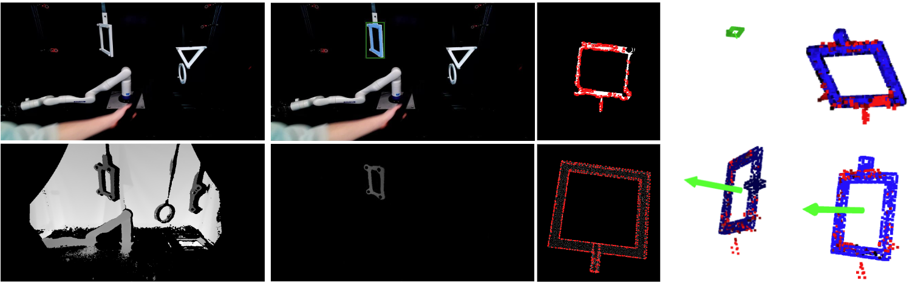

Demo Video #
Abstract #
In this project, we present a real-time, language-guided 6D object pose estimation pipeline that integrates modern vision-language models with classical 3D geometric techniques. Our pipeline begins with a fine-tuned Grouding-DINO model for language-guided object localization and a fine-tuned Segment Anything Model 2 (SAM2) for instance segmentation. To achieve accurate 3D reconstruction, we performed extrinsic calibration between an Azure Kinect RGB-D camera and a motion capture system. Point cloud data are generated from the depth information provided by Kinect, from which points belonging to the target object are selected by back-projecting the segmented 2D image region. This is followed by key-point extraction, FPFH-based correspondence matching, and coarse pose estimation using RANSAC-based algorithms. The final pose refinement is then obtained through an Iterative Closest Point (ICP) algorithm. We validate the full pipeline through experiments and report pose estimation accuracy and performance rate, demonstrating the system's ability to operate effectively in real-time.
Method #
A flow diagram illustrating our proposed mutli-modal perceptual integration. The pipeline follows a layered structure moving from language to image, point cloud, and finally pose. It begins with sensor setup and extrinsic calibration using an Azure Kinect, AprilTag, and optical motion capture, solving camera extrinsics via a Procrustes optimization. A language command is processed by a fine-tuned Grounding-DINO model to localize a 2D target, followed by instance segmentation with a domain-adapted SAM model to generate dense 3D point clouds. Finally, key points are extracted, descriptors are computed, and coarse point cloud registration is performed for pose estimation.
Experiment Results #
To demonstrate the real-world performance of our proposed pipeline, we established a custom experimental workspace and collected our own dataset for fine-tuning and evaluation. Our setup included an Azure Kinect camera positioned in front of a workspace, a Kinova robotic arm with an AprilTag mounted to its end-effector, and an activated OptiTrack motion capture system for precise ground truth collection. We performed hand-eye calibration by moving the arm to different positions. Three distinct target objects—a square, circle, and triangle—were suspended at varying positions, each marked with at least three fiducial markers.
For data preparation, we recorded synchronized RGB-D sequences and 3D trajectories. Although the Azure Kinect and OptiTrack systems were activated roughly at the same time, we performed fine synchronization using key event matching and addressed the difference in frame rates (30 fps vs. 100 fps) with a bidirectional time index mapping. To annotate masks for fine-tuning SAMv2, we leveraged color contrast for coarse masks and refined them using depth thresholding, isolating individual objects cleanly even when parts of the Kinova arm overlapped. With precise masks and bounding boxes, we prepared high-quality training data for fine-tuning GroundingDINO and SAMv2 for our target domain.

We fine-tuned GroundingDINO using open-source guidelines and further fine-tuned SAMv2 using our annotated dataset. The results demonstrate that our approach enables more accurate localization and segmentation of objects under real-world conditions, validating the effectiveness of the proposed layered pipeline that progresses from language input to 3D pose estimation.
Hardware Demonstrations #
We further validated our method through hardware demonstrations using the Kinova Gen 3 robotic arm. After fine-tuning, we evaluated the system by issuing language commands to detect and localize specified target objects in the workspace. The system successfully processed language input, localized objects in 2D through GroundingDINO, generated instance masks with SAMv2, and lifted 2D segmentations to 3D using depth information. We registered these lifted points with the ground-truth poses obtained from the OptiTrack system, enabling precise localization of target objects for robotic manipulation.
These experiments validate that our multi-modal pipeline can operate effectively with minimal supervision, accurately linking natural language queries to real-world 3D object poses. Our approach demonstrates robustness even when facing noisy depth readings or minor visual ambiguities, providing a practical pathway for language-driven robotic perception and manipulation tasks.
Citation #
This project was developed as a part of the Deep Learning for Robot Perception course at the University of Michigan Robotics Department.
@article{,
author = "Chen, Yuzhen and Zong, Yeheng and Li, Anran and Liu, Jiamu",
title = "PerceptFusion: Real-Time Object Understanding Through Multi-Modal Perceptual Integration",
year = 2025
}